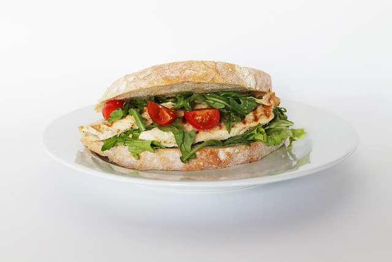
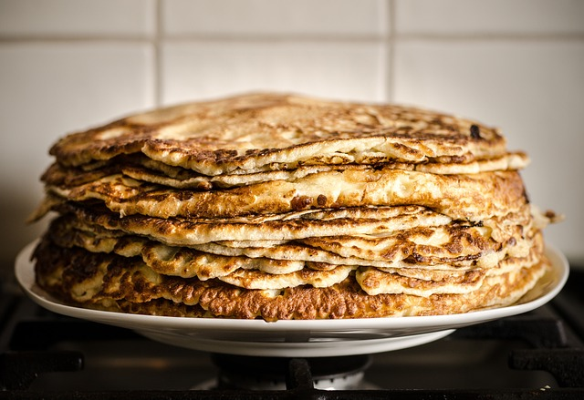

Sandwich froids
Voir les sandwich froids

Située au plus près de la plage de Biarritz, la roche plate est le spot parfait pour manger son sandwich au bord de la plage. Vous y découvrirez une équipe accueillante et souriante. Qui vous serviras du matin au soir avec professionnalisme et bonne humeur.